Adding Pens
Discover how to use the addShape(pen:) call and what happens when you create multiple independent pens on the same canvas.
Rendering Shapes
In Chapter I you drew with a single pen. This chapter introduces the key idea of multiple independent pens — each one with its own colour, thickness, and position. To display a pen's path on the canvas you must call addShape(pen:) — think of it as "print this pen's drawing to the screen".
var p1 = Pen() p1.addLine(distance: 100) addShape(pen: p1) // render p1's path var p2 = Pen() p2.turn(degrees: 90) p2.addLine(distance: 100) addShape(pen: p2) // render p2's path
Whyvar p = Pen()and notlet p = Pen()? Because a pen changes as you call methods on it — moving, turning, setting colour. Swift usesvarfor things that can change andletfor things that stay the same. A pen has to bevar; a fixed side length likelet side = 100should belet. You'll see this distinction again in the Variables tutorial (Section 10).
Each pen is an independent draft. When you createp2, it starts fresh at the origin (0, 0) facing right — not wherep1left off. Each pen tracks its own position and direction. This is what makes multiple pens powerful: you can draw unrelated shapes without them interfering with each other's state.
Nothing appears until you calladdShape. The pen records its path quietly in memory until you hand it toaddShape(pen:), which renders it onto the canvas. You can build up a complex path with many calls and then render it all at once, or render incrementally. ForgettingaddShapeis the single most common reason a student's code runs without errors but draws nothing!
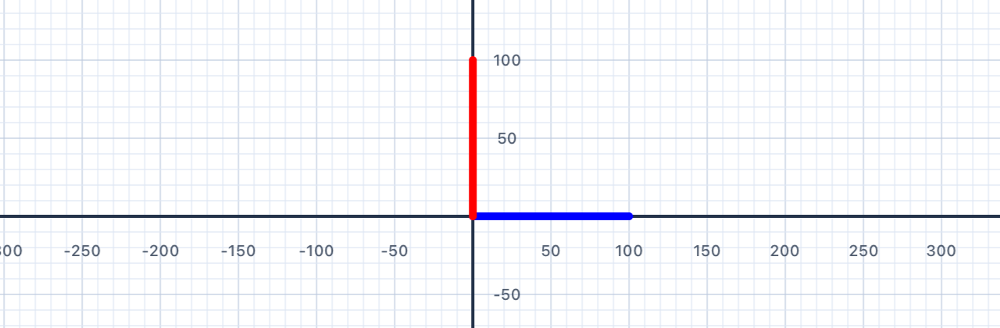
| Concept | Connection |
|---|---|
| Coordinate geometry | Each pen starts at the origin — independent paths share the same coordinate system |
| Line segments | Each addLine call produces a directed segment with defined start and end points |
Multiple Pens
Draw two separate squares side-by-side using two independent pens — one starting at the origin and the other offset to the right.
Your Task
Create two pens. Draw a 100-unit square with p1 starting at the origin. Then use p2 — start it at (150, 0) using move(distance:) or by setting its position — and draw a second 100-unit square.
var p1 = Pen() // Draw first square with p1 var p2 = Pen() // Position p2 and draw second square addShape(pen: p1) addShape(pen: p2)
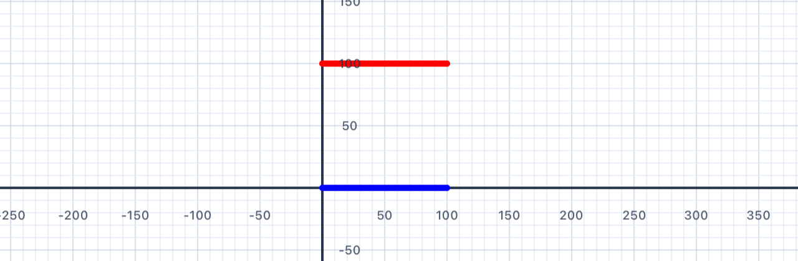
Translation in geometry. Offsettingp2by 150 units to the right is a rigid translation — every point ofp2's square is shifted by the same vector (+150, 0) fromp1's square. The two squares are congruent: same shape, same size, just at different positions. Translation is one of three rigid motions (along with rotation and reflection) that preserve distances and angles. You'll meet all three throughout this chapter.
Two pens, two origins. Both pens start at the canvas origin (0, 0) by default. Callingp2.move(distance: 150)slidesp2forward by 150 units without drawing — so when you then calladdLine, the line starts at (150, 0). Think ofmoveas lifting the pen off the paper, sliding it, then putting it back down ready to draw.
var p1 = Pen() p1.addLine(distance: 100) p1.turn(degrees: 90) p1.addLine(distance: 100) p1.turn(degrees: 90) p1.addLine(distance: 100) p1.turn(degrees: 90) p1.addLine(distance: 100) addShape(pen: p1) var p2 = Pen() p2.move(distance: 150) // move right without drawing p2.addLine(distance: 100) p2.turn(degrees: 90) p2.addLine(distance: 100) p2.turn(degrees: 90) p2.addLine(distance: 100) p2.turn(degrees: 90) p2.addLine(distance: 100) addShape(pen: p2)
| Concept | Connection |
|---|---|
| Translations | Offsetting p2 by 150 units is a translation — a rigid motion that shifts every point the same distance |
| Congruence | Both squares are congruent — same shape, same size, different position |
Turning Both Ways
Explore negative degree values — turning right (clockwise) instead of left — and understand how this unlocks a wider range of shapes.
Positive vs Negative Turns
A positive turn angle rotates the pen anti-clockwise (left). A negative angle rotates it clockwise (right). This matches the standard mathematical convention you'll see in trigonometry and coordinate geometry.
p.turn(degrees: 90) // rotate LEFT 90° (anti-clockwise) p.turn(degrees: -90) // rotate RIGHT 90° (clockwise)
Why "positive = anti-clockwise"? It feels backwards at first (clocks go clockwise, so shouldn't positive mean clockwise?). But mathematicians chose the opposite convention centuries ago, for a good reason: in standard (x, y) coordinate geometry, rotating the positive x-axis toward the positive y-axis goes counter-clockwise. Keeping that direction "positive" means angle formulas work cleanly without sign flips. Every maths textbook and programming language uses this convention — get comfortable with it now.
If you walked around a shape. When you drew a square in Chapter I by turning 90° four times, you were walking counter-clockwise around the square — because positive turns go left (anti-clockwise). That's why the square "grew upward and to the right" from your starting corner. Try drawing one with turn(degrees: -90) instead, and you'll see the square grow downward and to the right: you're walking clockwise now, tracing the same shape in the mirror direction.
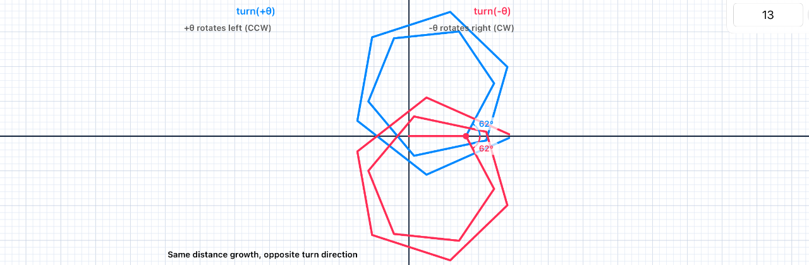
| Concept | Connection |
|---|---|
| Directed angles | Positive = anti-clockwise, negative = clockwise — this is the convention used in trigonometry and coordinate geometry |
| Rotations | Turning the pen is equivalent to a rotation of the direction vector around the pen's current position |
Two Squares
Draw a large square (200 units) and a small square (100 units) that shares the same bottom-left corner — creating a nested effect.
Your Task
Use a single pen to draw both squares without lifting it (use move to reposition if needed), or use two separate pens.
var p = Pen() // Draw large square (200 units) // Draw small square (100 units) addShape(pen: p)
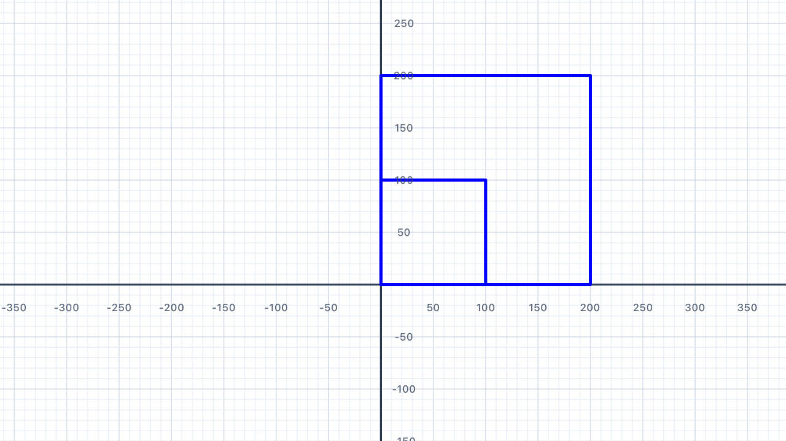
Similarity vs congruence. Two shapes are congruent if they have the same size and shape — one is a translated/rotated/reflected copy of the other. Two shapes are similar if they have the same shape but possibly different sizes — one is a scaled copy of the other. The two squares in this exercise are similar (same shape, different sizes) but not congruent (different sizes). The ratio of their side lengths, 200 : 100, is called the scale factor. The ratio of their areas is the scale factor squared: (200/100)² = 4 — the large square has four times the area of the small one.
Why the pen ends up back at the starting corner. After drawing each square, the pen's heading has rotated by 4 × 90° = 360° — a full circle. Combined with 4 equal-length sides, the pen returns to exactly its starting position. This is why you can "draw another square" by continuing from the same pen without repositioning — it's already back home.
var p = Pen() // Large square: 200 units p.addLine(distance: 200) p.turn(degrees: 90) p.addLine(distance: 200) p.turn(degrees: 90) p.addLine(distance: 200) p.turn(degrees: 90) p.addLine(distance: 200) p.turn(degrees: 90) // Small square: 100 units (starts from the same corner) p.addLine(distance: 100) p.turn(degrees: 90) p.addLine(distance: 100) p.turn(degrees: 90) p.addLine(distance: 100) p.turn(degrees: 90) p.addLine(distance: 100) addShape(pen: p)
| Concept | Connection |
|---|---|
| Similarity | The two squares are similar — same shape but different sizes, with a scale factor of 2:1 |
| Perimeter | Perimeter of large square = 4 × 200 = 800; small = 4 × 100 = 400 |
Thicker Lines
Use the lineWidth property to draw a bold triangle — and explore how stroke width affects a shape's visual weight.
Your Task
Draw an equilateral triangle (3 sides, turning 120° at each corner) with a lineWidth of 6.
var p = Pen() p.lineWidth = 6 // Draw equilateral triangle addShape(pen: p)
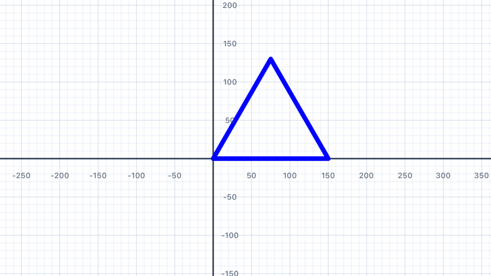
Why 120° for a triangle? Same reason as Chapter I: if you walked around the triangle, your total turning would be 360° (a full rotation), split equally across 3 corners — 360° ÷ 3 = 120° per turn. You'll see this "exterior angle = 360° ÷ n" formula again and again for every regular polygon.
Line width vs shape width.lineWidthcontrols the stroke thickness — how fat the drawn line is — not the size of the shape. A triangle with side 150 andlineWidth = 6is the same size as one withlineWidth = 1, just drawn with a thicker pen. Think of it like choosing a marker vs a fine-tipped pen: same drawing, different visual weight.
var p = Pen() p.lineWidth = 6 p.addLine(distance: 150) p.turn(degrees: 120) p.addLine(distance: 150) p.turn(degrees: 120) p.addLine(distance: 150) addShape(pen: p)
| Concept | Connection |
|---|---|
| Equilateral triangle | All three sides equal; all interior angles = 60°; exterior turn = 120° |
| Exterior angle theorem | 360° ÷ 3 sides = 120° per turn; verifies sum of exterior angles = 360° |
Coloured Triangle
Draw a triangle where each side is a different colour — green, red, and blue — by changing penColor between sides.
Your Task
Use three pens (or change the colour on one pen before each side) to produce a triangle with sides in three different colours.
var p = Pen() p.penColor = .green p.addLine(distance: 150) p.turn(degrees: 120) // Continue for red and blue sides… addShape(pen: p)
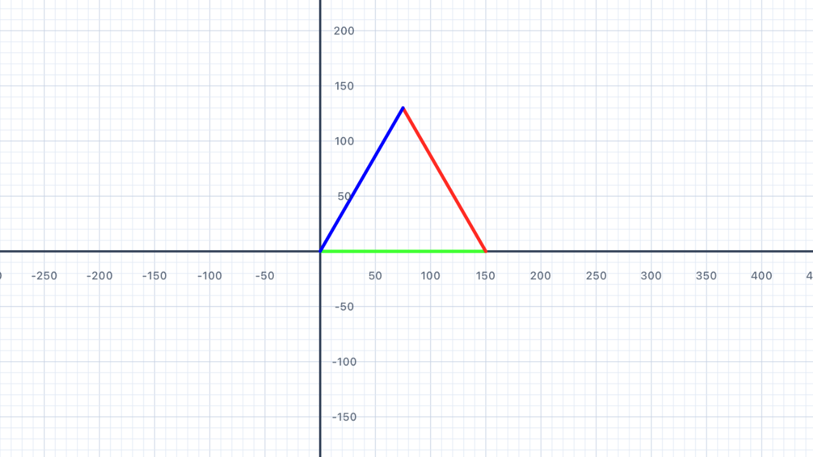
Colour is a pen state. When you setp.penColor = .red, it's not drawing anything yet — it's just updating the pen's "current colour" setting. The nextaddLineyou call will use that colour. This is the same pattern as position and heading: the pen keeps track of its current state, and each drawing command uses whatever state is active when you call it. Change the state between lines to get multi-coloured shapes.
var p = Pen() p.penColor = .green p.addLine(distance: 150) p.turn(degrees: 120) p.penColor = .red p.addLine(distance: 150) p.turn(degrees: 120) p.penColor = .blue p.addLine(distance: 150) addShape(pen: p)
| Concept | Connection |
|---|---|
| Triangle classification | Equilateral — three sides equal, three angles equal (60° each) |
| Angle sum | Interior angles of any triangle sum to 180° |
Diamond
Draw a diamond (rhombus) with equal sides but non-right angles — using turn angles less than and greater than 90°.
Your Task
Draw a diamond with side length 150 and interior angles of 60° and 120°. Hint: the exterior turns will be 120° and 60° alternating.
var p = Pen() // 4 equal sides, alternating turns addShape(pen: p)
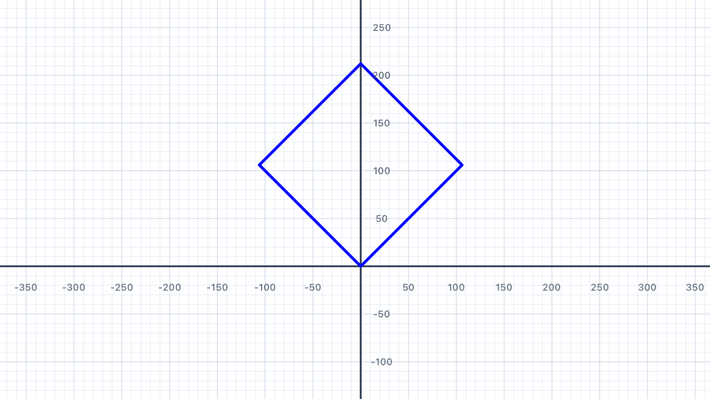
Why two different turn angles? A rhombus has 4 equal sides but two different interior angles — 60° and 120° — that alternate around the shape. The exterior angle at each corner is180° − interior, so the exterior angles alternate between180° − 60° = 120°and180° − 120° = 60°. Those are exactly the turn values in the solution below. Check the sanity:120° + 60° + 120° + 60° = 360°— one full rotation, so the path closes. ✓
Adjacent angles are supplementary. In any parallelogram (including rhombuses), adjacent interior angles sum to 180°. So if one angle is 60°, the next one around must be 120°, and then back to 60°, and so on. This is a direct consequence of the parallel sides: imagine extending one side as a transversal — the co-interior angles with the next side must sum to 180°.
var p = Pen() p.turn(degrees: 45) // tilt the rhombus so it stands on a corner p.addLine(distance: 150) p.turn(degrees: 60) p.addLine(distance: 150) p.turn(degrees: 120) p.addLine(distance: 150) p.turn(degrees: 60) p.addLine(distance: 150) addShape(pen: p)
| Concept | Connection |
|---|---|
| Rhombus properties | 4 equal sides; opposite angles equal; diagonals bisect each other at right angles |
| Supplementary angles | Adjacent interior angles sum to 180°: 60° + 120° = 180° |
Fill It In
Learn about the fillColor property to colour the interior of closed shapes.
Adding Fill
Setting fillColor on a pen before drawing will colour the enclosed area of a closed shape. The path must be closed (return to its starting point) for fill to work correctly.
var p = Pen() p.fillColor = .yellow p.penColor = .orange p.addLine(distance: 100) p.turn(degrees: 90) p.addLine(distance: 100) p.turn(degrees: 90) p.addLine(distance: 100) p.turn(degrees: 90) p.addLine(distance: 100) addShape(pen: p)
Fill vs stroke.fillColorpaints the interior of a closed shape;penColor(also called "stroke") paints the boundary line. You can set both, neither, or just one — giving you a yellow square with an orange outline, a pure yellow fill with no border (setpenColorto matchfillColor), or just an outline with no fill. This is the same distinction every vector graphics tool uses.
Area vs perimeter. The fill occupies the area (100 × 100 = 10,000square units for this square); the pen line traces the perimeter (4 × 100 = 400units). These are the two fundamental measurements of a 2D shape. Perimeter is a length (measured in units); area is an area (measured in square units).
"Closed" matters. Fill only works if the path forms a closed loop — i.e., the last point connects back to the first. An unclosed path (three sides of a square with the fourth side missing) can't be filled because the rendering system doesn't know what counts as "inside". This is a property of plane topology: a closed curve divides the plane into exactly two regions (inside and outside), but an open curve doesn't.
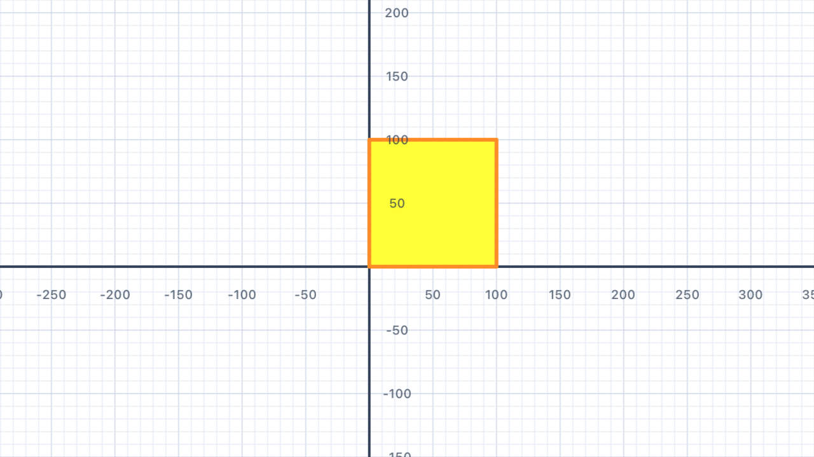
| Concept | Connection |
|---|---|
| Area vs perimeter | Fill occupies the interior (area); the pen line defines the boundary (perimeter) |
| Closed figures | A shape must be topologically closed for fill to render — a key property in geometry |
Coloured Squares
Draw three filled squares in a row — red, green, and blue — each 80 units wide with a 20-unit gap between them.
Your Task
Use three separate pens positioned at different x-coordinates. Give each pen a different fillColor.
// Three pens at x = 0, 100, 200 // Each draws an 80×80 filled square
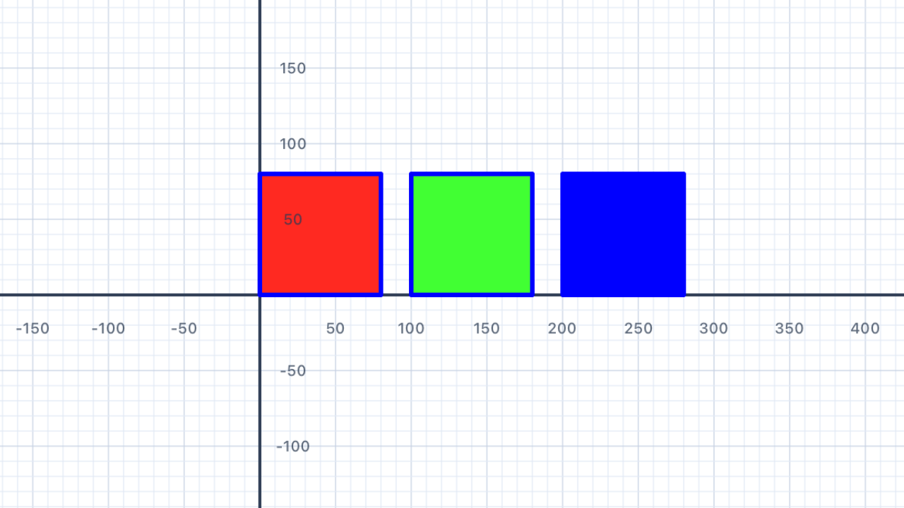
Three pens, three starting positions. EachPen()begins at the origin — your job is to move it to the right starting position before drawing. For a row of squares at x = 0, 100, 200, the second pen needsmove(distance: 100)and the third needsmove(distance: 200). Note the 20-unit gap: square 1 ends at x = 80, square 2 starts at x = 100, giving a 20-unit space between them.
Notice the repetition. The three blocks are nearly identical except for the move distance and the fill colour. This is a perfect candidate for a loop (Chapter III!) and then a function (Chapter V!) — but with only variables and conditionals available so far, you have to write it out longhand. Feel the pain of the repetition; that pain is exactly what loops and functions solve.
var p1 = Pen() p1.fillColor = .red p1.addLine(distance: 80) p1.turn(degrees: 90) p1.addLine(distance: 80) p1.turn(degrees: 90) p1.addLine(distance: 80) p1.turn(degrees: 90) p1.addLine(distance: 80) addShape(pen: p1) var p2 = Pen() p2.move(distance: 100) p2.fillColor = .green p2.addLine(distance: 80) p2.turn(degrees: 90) p2.addLine(distance: 80) p2.turn(degrees: 90) p2.addLine(distance: 80) p2.turn(degrees: 90) p2.addLine(distance: 80) addShape(pen: p2) var p3 = Pen() p3.move(distance: 200) p3.fillColor = .blue p3.addLine(distance: 80) p3.turn(degrees: 90) p3.addLine(distance: 80) p3.turn(degrees: 90) p3.addLine(distance: 80) p3.turn(degrees: 90) p3.addLine(distance: 80) addShape(pen: p3)
| Concept | Connection |
|---|---|
| Area | Each square: area = 80² = 6400 square units; total area = 3 × 6400 = 19,200 |
| Translations | Each square is a translated copy — same shape, size, and orientation at a different position |
Variables
Store sizes in variables so you can change your shape's dimensions in one place and have the whole drawing update automatically.
Using Variables for Dimensions
A variable is a named container for a value. By storing a side length in a variable, changing it once updates the entire drawing — and the code becomes self-documenting because the name tells you what the number means.
let side = 120.0 // change this one value to resize everything var p = Pen() p.addLine(distance: side) p.turn(degrees: 90) p.addLine(distance: side) p.turn(degrees: 90) p.addLine(distance: side) p.turn(degrees: 90) p.addLine(distance: side) addShape(pen: p)
Variables vs Constants
You may have noticed two different keywords in Swift: var and let. They both name a value — but behave differently.
| Keyword | Name | Can it change? | Use it for… |
|---|---|---|---|
var | Variable | Yes | Things that change over time — like a Pen as it moves and turns |
let | Constant | No | Fixed values that should stay the same — like a side length you set once |
let side = 100.0 // constant — the value is fixed var p = Pen() // variable — p changes as we call methods on it
Use let when a value should never change after you set it — Swift will warn you if you accidentally try to modify it. Use var when the value needs to change (or when Swift requires it, as with Pen).
Why use variables at all? Three reasons: (1) one place to change — updatesideonce and everyaddLine(distance: side)uses the new value; (2) self-documenting code —sidetells the reader what120.0means in context, whereas bare numbers don't; (3) expressions — you can compute derived values likelet perimeter = 4 * sidewithout manually recalculating.
Variables are like letters in algebra. In maths you write "let s be the side length" and then use s everywhere: perimeter = 4s, area = s². Swift's let side = 100.0 is literally the same idea — you're binding a name to a value and reasoning about it symbolically. This is the bridge from specific numbers (arithmetic) to general patterns (algebra).
Why default tolet? When Swift seeslet x = 10, it guarantees thatxnever changes. This guarantee means you (and anyone reading your code) can trust that every reference toxhas the same value. Usingvargives up that guarantee. Rule of thumb: start withlet, and only switch tovarif Swift tells you the variable needs to change. The fewer things that can change, the easier it is to reason about your program.
Types are inferred. When you writelet side = 100.0, Swift figures out thatsideis aDouble(because of the decimal point). If you wrotelet side = 100(no decimal), it would be anInt. This matters:addLine(distance:)expects aDouble, so writinglet side = 100(Int) would be a type error. Writing100.0(Double) works directly. Small distinction, big difference!
| Concept | Connection |
|---|---|
| Variables & expressions | Side length s is a variable; perimeter = 4s and area = s² are expressions derived from it |
| Generalisation | Writing a formula in terms of a variable generalises from specific numbers to all cases |
House
Combine a square base and a triangular roof to draw a simple house shape using two pens or careful repositioning.
Your Task
Draw a square (100 units) for the walls, then continue from the top-left corner to draw an isosceles triangle roof. The roof peak should be centred above the square.
var p = Pen() // Square body + triangular roof addShape(pen: p)

Composite figures. A house is a composite of two basic shapes: a square (the body) and a triangle (the roof) sitting on top. Breaking a complex shape into simple parts is a core problem-solving technique in geometry — you calculate area, perimeter, and properties of each part separately, then combine. Cities, circuit boards, molecules, and computer graphics are all built from composites of simpler parts.
The mysterious57.74. This is the side length of an equilateral triangle with the same base as the square. An equilateral triangle with sideshas a height ofs × √3 / 2 ≈ 0.866 × s. If the square has side 100, an equilateral roof would have sides of 100 each — but the code uses 57.74, which is actually100 / √3. This makes the roof an isosceles (not equilateral) triangle with a 120° apex and 30° base angles — a flatter roof. If you wanted an equilateral roof (60°-60°-60°, a steeper pitch), you'd use side length 100 with a 60° first turn.
var p = Pen() // Square base (100 × 100) p.addLine(distance: 100) p.turn(degrees: 90) p.addLine(distance: 100) p.turn(degrees: 90) p.addLine(distance: 100) p.turn(degrees: 90) p.addLine(distance: 100) p.turn(degrees: 90) // Move up to the top-left of the square (without drawing) p.turn(degrees: 90) p.move(distance: 100) p.turn(degrees: -90) // Roof: two sides at 30° from horizontal, meeting at a 120° apex p.turn(degrees: 30) p.addLine(distance: 57.74) p.turn(degrees: 120) p.addLine(distance: 57.74) addShape(pen: p)
| Concept | Connection |
|---|---|
| Composite figures | Total area = area of square + area of triangle — composites are decomposed into simpler shapes |
| Isosceles triangle | Roof triangle has two equal sides and two equal base angles |
Calculate
Use Swift arithmetic to compute side lengths and angles — let the code do the maths rather than calculating by hand.
Your Task
Draw a regular hexagon. Instead of calculating the turn angle yourself, store the number of sides in a constant and use 360.0 / 6 to let Swift compute it. Then write one addLine and one turn for each of the six sides.
let sides = 6 let turn = 360.0 / Double(sides) var p = Pen() // Draw each of the 6 sides using 'turn' addShape(pen: p)
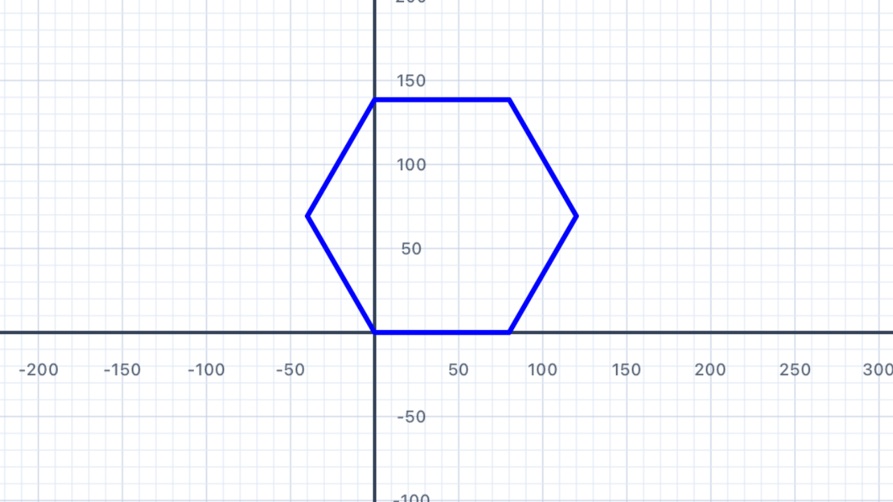
Let the code do the maths. Instead of calculating360 ÷ 6 = 60in your head and hardcodingturn(degrees: 60), store the number of sides in a constant and computeturn = 360.0 / Double(sides). Now changingsidesto 8 automatically updates the turn to 45°. This is a huge pedagogical leap: you're moving from "doing arithmetic with specific numbers" to "expressing a general formula algebraically" — exactly the step students take when moving from arithmetic to algebra in school maths.
Why360.0and not360? BecauseDouble(sides)produces aDouble, Swift needs the other side of the division to also be aDoublefor the types to match. Writing360.0(with the decimal point) makes it aDoubleliteral. If you wrote360(no decimal), Swift would treat it as anIntand the division wouldn't compile becauseInt / Doubleis a type mismatch. This is the strict-typing theme you'll see again in Chapter III's spiral exercise.
let sides = 6 let turn = 360.0 / Double(sides) var p = Pen() p.addLine(distance: 100) p.turn(degrees: turn) p.addLine(distance: 100) p.turn(degrees: turn) p.addLine(distance: 100) p.turn(degrees: turn) p.addLine(distance: 100) p.turn(degrees: turn) p.addLine(distance: 100) p.turn(degrees: turn) p.addLine(distance: 100) p.turn(degrees: turn) addShape(pen: p)
| Concept | Connection |
|---|---|
| Regular polygons | Exterior angle = 360° ÷ n; interior angle = 180° − (360° ÷ n) |
| Algebraic reasoning | Expressing the angle as 360/n generalises the formula for all regular polygons |
Variable House
Refactor the House exercise using a variable for the house width, so you can resize the whole building by changing one number.
Your Task
Store the house width in a variable w. The roof height and angles should be derived from w using arithmetic, so the shape scales correctly.
let w = 120.0 // change this to resize the house var p = Pen() // Use w throughout addShape(pen: p)
Proportional scaling. This is the whole point of variable-based design: everything that depends on the house's size should be derived fromw, not hardcoded. Roof side length =w / sqrt(3)(orwfor an equilateral roof). Window position =w * 0.3. Door width =w * 0.25. Changewand every piece scales together, producing a larger or smaller but geometrically similar house. This "proportional design" pattern is foundational for every flag, house, and vehicle you'll build in later chapters.
Angles don't scale. When you shrink a triangle, its lengths get smaller but its angles stay the same. That's what makes similar shapes similar. So your variablewmultiplies everyaddLine(distance: ...), but theturn(degrees: ...)values stay constant (60°, 120°, 90° etc). This directly mirrors the mathematical definition of similar figures: lengths scale by a common factor, angles are preserved.
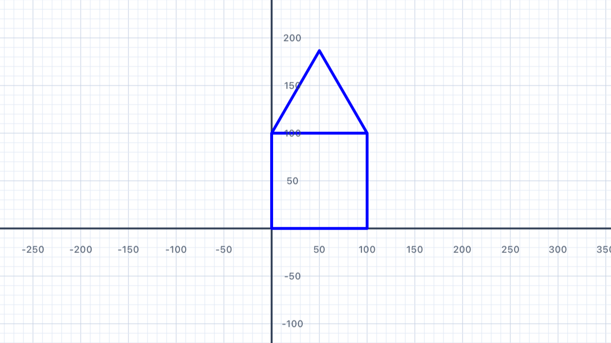
| Concept | Connection |
|---|---|
| Proportional reasoning | Scaling all dimensions by the same factor produces a similar figure |
| Variables in geometry | Writing perimeter/area formulas in terms of w models geometric relationships algebraically |
Red Cross
Draw a filled red cross (plus sign) shape — a composite figure made from rectangles.
Your Task
A cross can be drawn as a 12-sided polygon. Start at the bottom-left of the lower arm and work around the perimeter, alternating between long (100) and short (40) sides, and alternating the direction of the turns (some are 90° left, some are 90° right).
var p = Pen() p.fillColor = .red p.penColor = .red // 12 sides, 4 outer corners (90°), 8 inner corners (-90°) addShape(pen: p)
Convex vs concave polygons. A convex polygon has all interior angles less than 180° — every triangle, square, regular polygon, etc. A concave (or "non-convex") polygon has at least one interior angle greater than 180° — the cross is the classic example. You can spot a concave polygon because the boundary "bends inward" at some corner. The sum of interior angles still equals (n − 2) × 180°, but individual angles can exceed 180° (reflex angles) as long as others compensate.
Sign of the turn. At the outer corners of the cross (the 4 points where the arms end), the pen turns 90° left — positive. At the inner corners (where an arm joins the centre square), it turns 90° right — negative. The total turning must still sum to 360° for the shape to close: 4 × 90° + 8 × (−90°) = 360° − 720° = −360°. Wait, that's −360°, not +360°! That's fine — −360° also brings the pen back to its original heading. A concave polygon traced clockwise ends with total turning of −360°; traced anti-clockwise, +360°. Either way, it closes.
Area via inclusion–exclusion. The cross is made of 3 overlapping rectangles: a horizontal bar (100 × 40), a vertical bar (40 × 100), and — wait, they overlap at a 40 × 40 square in the middle which would be counted twice. Total area = (100 × 40) + (100 × 40) − (40 × 40) = 4000 + 4000 − 1600 = 6400 square units. This "inclusion–exclusion" trick — add the parts, subtract the overlap — is one of the most useful formulas in combinatorics and set theory.
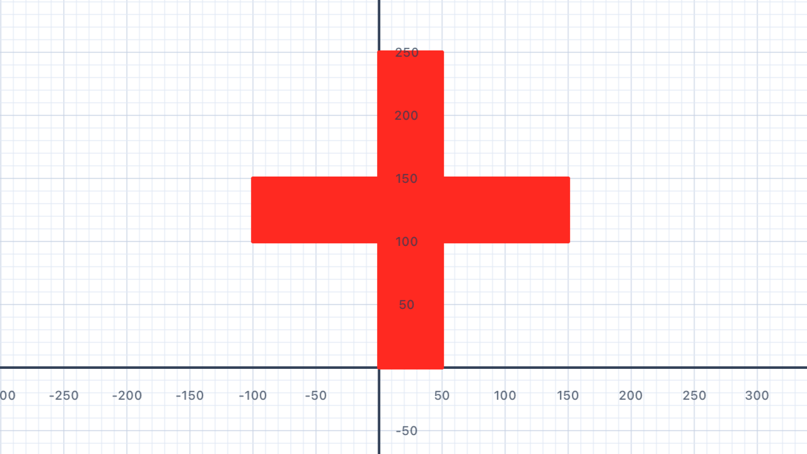
| Concept | Connection |
|---|---|
| Area of composite figures | Cross area = 3 rectangles overlapping; use inclusion-exclusion: 3(100×40) − 2(40×40) |
| Perimeter of irregular shapes | Count each boundary segment: 4 long sides + 8 short sides |
Simple Snowflake
Draw 6 arms radiating from the centre — each arm a straight line — to create a basic snowflake with 6-fold symmetry.
Your Task
Draw 6 arms of equal length, each rotated 60° from the last. After each arm, return to the centre by moving backwards (negative distance).
var p = Pen() // Arm 1 p.addLine(distance: 100) p.move(distance: -100) p.turn(degrees: 60) // Arm 2 p.addLine(distance: 100) p.move(distance: -100) p.turn(degrees: 60) // Arm 3 p.addLine(distance: 100) p.move(distance: -100) p.turn(degrees: 60) // Arm 4 p.addLine(distance: 100) p.move(distance: -100) p.turn(degrees: 60) // Arm 5 p.addLine(distance: 100) p.move(distance: -100) p.turn(degrees: 60) // Arm 6 p.addLine(distance: 100) addShape(pen: p)
Negative distance = move backwards. Callingmove(distance: -100)slides the pen backwards along its current heading by 100 units. It's equivalent to "turn 180°, move 100, turn 180° back again" but more concise. In this exercise, each arm draws 100 units forward, then usesmove(-100)to return to the centre without leaving a visible line.
6-fold rotational symmetry. Dividing 360° by 6 gives 60° — the rotation needed to evenly space 6 arms around a full circle. The result has order-6 rotational symmetry: rotating the whole snowflake by 60° leaves it visually unchanged. Real snowflakes have this same symmetry because of how water molecules bond — the hydrogen bonding angles force 6-fold crystalline patterns. Nature is full of symmetry constraints like this.
The angles at the centre sum to 360°. Six arms, each offset by 60° from the previous one:6 × 60° = 360°. The angles around any point in the plane always sum to one full rotation — this is a foundational axiom of Euclidean geometry. Try changing to 8 arms with 45° turns (8 × 45° = 360°✓) or 5 arms with 72° (5 × 72° = 360°✓) to see the rule generalise.
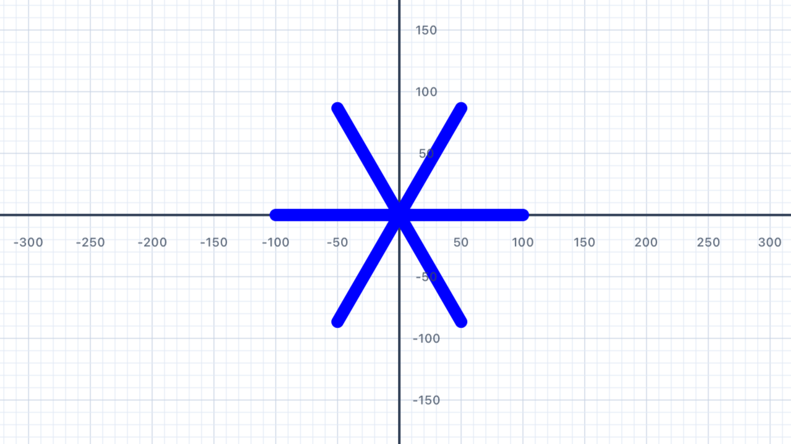
| Concept | Connection |
|---|---|
| Rotational symmetry | A 6-arm snowflake has order-6 rotational symmetry — it maps onto itself after 60° rotations |
| Angles at a point | 6 arms × 60° = 360° — the angles around the centre sum to one full rotation |
Parallel Lines
Draw four horizontal parallel lines — equally spaced — demonstrating lines that never meet.
Your Task
Draw 4 horizontal lines, each 200 units long, spaced 40 units apart vertically. Use 4 pens — start each one at a different height using turn and move.
// Line 1 — at y = 0 var p1 = Pen() p1.addLine(distance: 200) addShape(pen: p1) // Line 2 — at y = 40 var p2 = Pen() // Move p2 up 40 units, then face right again // Line 3 and 4 — continue the pattern
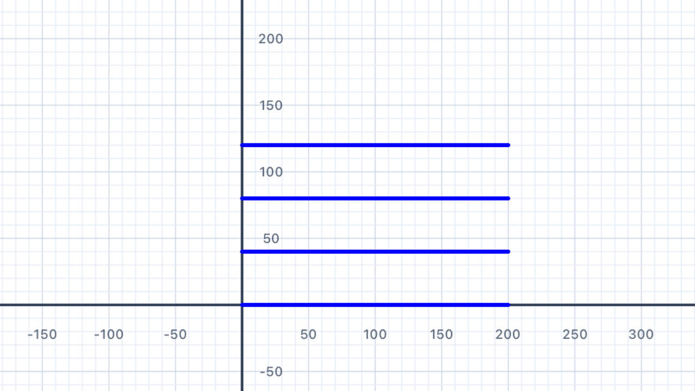
Parallel lines never meet. In Euclidean (flat) geometry, two lines are parallel if they're in the same plane and never intersect. Equivalently: they have the same direction (in coordinate terms, the same slope or gradient). Every pen in this solution has the same heading (facing right, slope = 0), so their lines are automatically parallel.
The parallel postulate. One of Euclid's five axioms says that through a point not on a line, there's exactly one parallel line. This sounds obvious, but in the 19th century mathematicians realised that dropping this axiom gives you non-Euclidean geometry — curved spaces like the surface of a sphere (where "parallel" lines can intersect) or a hyperbolic plane (where infinitely many parallels can exist). Einstein's general relativity uses non-Euclidean geometry to describe gravity.
// Line 1 — at y = 0 var p1 = Pen() p1.addLine(distance: 200) addShape(pen: p1) // Line 2 — at y = 40 var p2 = Pen() p2.turn(degrees: 90) p2.move(distance: 40) p2.turn(degrees: -90) p2.addLine(distance: 200) addShape(pen: p2) // Line 3 — at y = 80 var p3 = Pen() p3.turn(degrees: 90) p3.move(distance: 80) p3.turn(degrees: -90) p3.addLine(distance: 200) addShape(pen: p3) // Line 4 — at y = 120 var p4 = Pen() p4.turn(degrees: 90) p4.move(distance: 120) p4.turn(degrees: -90) p4.addLine(distance: 200) addShape(pen: p4)
| Concept | Connection |
|---|---|
| Parallel lines | Lines in the same direction that never intersect; have equal gradient (slope) |
| Coordinate geometry | Offsetting the y-start corresponds to a vertical translation |
Letter Z
Draw the letter Z using three line segments — a top horizontal, a diagonal, and a bottom horizontal — observing how the Z-angles relate to parallel lines.
Your Task
Draw: a horizontal line right 100, then turn down-left to draw the diagonal, then turn to draw the bottom horizontal. The diagonal creates Z-angles (alternate interior angles) with the horizontal lines.
var p = Pen() p.addLine(distance: 100) // top line p.turn(degrees: -120) p.addLine(distance: 115.5) // diagonal p.turn(degrees: -60) p.addLine(distance: 100) // bottom line addShape(pen: p)
The Z angle theorem. When a diagonal line (called a transversal) crosses two parallel lines, it creates two "alternate interior angles" — the angles inside the Z-shape on opposite sides of the transversal. These angles are equal. In this exercise, the top horizontal meets the diagonal at 60° (interior); the bottom horizontal meets the diagonal at 60° on the other side. Mirror each other, equal angle. Some people remember this as "Z-angles are equal" because the shape literally forms a Z.
Why 115.5 for the diagonal? The diagonal has to connect the right end of the top line to the left end of the bottom line, covering a horizontal distance of 100 units (back the other way). If the diagonal makes a 60° angle with the horizontal, its length is100 / cos(60°) = 100 / 0.5 = 200... wait, that's not right for this code. Let me rethink: withturn(degrees: -120)from facing right, the new heading is 60° below the horizontal (from facing right, clockwise 120° = facing lower-right at 60° below horizontal). The diagonal of length 115.5 ≈ 100 × 2/√3 covers the required horizontal and vertical distances to reach the bottom-left of where the bottom line starts.
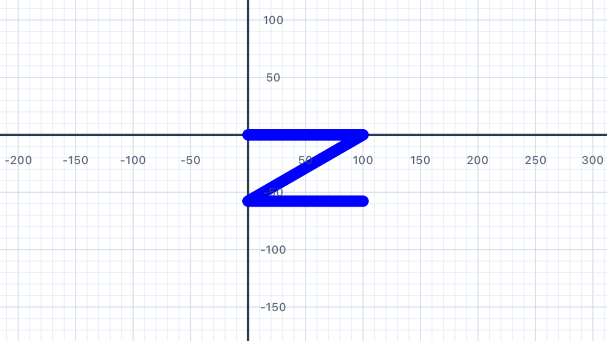
| Concept | Connection |
|---|---|
| Alternate interior angles | The Z-shape shows alternate angles — equal when lines are parallel — visually embedded in the letter |
| Transversal | The diagonal is a transversal crossing two parallel (horizontal) lines |
Rhombus
Draw a filled rhombus with side length 120 and interior angles of 70° and 110°. Explore how opposite angles in a parallelogram are equal.
Your Task
A rhombus has 4 equal sides. Opposite angles are equal; adjacent angles are supplementary (sum to 180°). So if one angle is 70°, the next is 110°, then 70°, then 110°.
let interiorAngle = 70.0 let exterior = 180.0 - interiorAngle var p = Pen() p.fillColor = .purple // Use interior/exterior angles to draw rhombus addShape(pen: p)
Rhombus properties. A rhombus is defined by two things: (1) all four sides are equal in length, and (2) opposite sides are parallel. From these, a whole family of properties follow: opposite angles are equal, adjacent angles sum to 180°, diagonals bisect each other at 90°, diagonals bisect the vertex angles. Every square is a rhombus (special case where all angles are 90°); every rhombus is a parallelogram. You'll see these hierarchical relationships again in Chapter IV's quadrilateral classifier.
Storing derived values. The code computeslet exterior = 180.0 - interiorAngle— an expression that derives the exterior angle from the interior angle. This is the core of algebraic modelling: you define one variable (the "input") and derive others from it. ChangeinteriorAngleto 50° andexteriorautomatically becomes 130°. The relationshipinterior + exterior = 180°is hard-coded into the expression, never into individual numbers.
| Concept | Connection |
|---|---|
| Rhombus properties | All sides equal; opposite angles equal; diagonals bisect each other at 90° |
| Co-interior angles | Adjacent interior angles are supplementary — another transversal property applied to parallel sides |
Parallelogram
Draw a parallelogram — two pairs of parallel sides — showing how it differs from a rhombus when sides have different lengths.
Your Task
Draw a parallelogram with long sides 160 units, short sides 80 units, and interior angles of 70° and 110°.
var p = Pen() p.addLine(distance: 160) p.turn(degrees: 110) p.addLine(distance: 80) p.turn(degrees: 70) p.addLine(distance: 160) p.turn(degrees: 110) p.addLine(distance: 80) addShape(pen: p)
Parallelogram vs rhombus. A parallelogram has opposite sides that are parallel and equal (like a rhombus), but unlike a rhombus, adjacent sides may have different lengths. A rhombus is the special case where all four sides are equal. So: every rhombus is a parallelogram, but not every parallelogram is a rhombus. In the exercise above, 160 ≠ 80, so this is a parallelogram but not a rhombus.
Parallelogram area formula. The area of a parallelogram isbase × height, where "height" is the perpendicular distance between the two base sides — not the length of the slanted side. For this parallelogram with base 160 and a slanted side of 80 at 70° from horizontal, the perpendicular height is80 × sin(70°) ≈ 75.2, so the area is about160 × 75.2 ≈ 12,030square units. Compare this to a rectangle with the same side lengths (area160 × 80 = 12,800) — the parallelogram is slightly smaller because some of the "80" runs horizontally, not vertically.
Shear transformation. You can think of a parallelogram as a sheared rectangle — take a 160×80 rectangle and push the top edge horizontally while keeping the bottom edge still. The sides become slanted but the top and bottom stay parallel. This "shear" is one of the basic affine transformations in linear algebra and computer graphics.
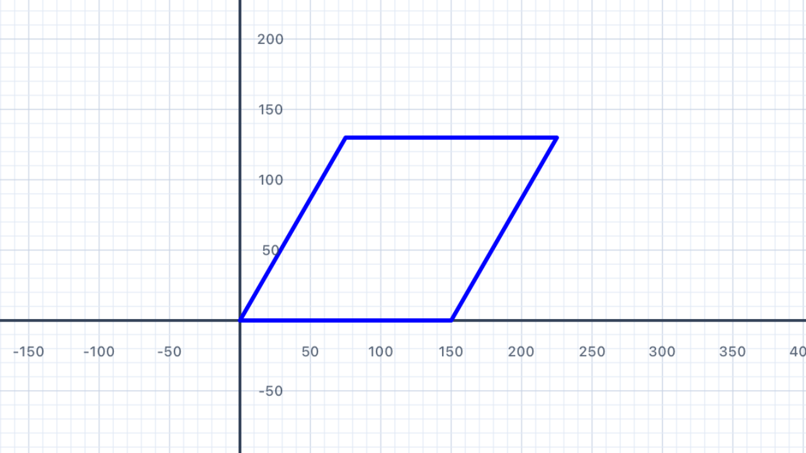
| Concept | Connection |
|---|---|
| Parallelogram properties | Opposite sides parallel and equal; opposite angles equal; diagonals bisect each other |
| Area formula | Area = base × height = 160 × 80 × sin(70°) ≈ 12,030 sq units |
Polygon Properties Explorer
Draw a selection of regular polygons — from a triangle to a decagon — and observe how the shape approaches a circle as the number of sides increases.
Your Task
Change sides to explore different regular polygons — try 3, 4, 5, 6, 8. Add or remove addLine/turn pairs so the number of lines matches the number of sides. Notice how the shape changes as sides increase.
// Change 'sides' and add/remove lines to match let sides = 6 let turn = 360.0 / Double(sides) var p = Pen() p.addLine(distance: 80) p.turn(degrees: turn) p.addLine(distance: 80) p.turn(degrees: turn) p.addLine(distance: 80) p.turn(degrees: turn) p.addLine(distance: 80) p.turn(degrees: turn) p.addLine(distance: 80) p.turn(degrees: turn) p.addLine(distance: 80) p.turn(degrees: turn) addShape(pen: p)
A polygon is a polygon is a polygon… Notice that every pair ofaddLine/turnlines is identical. You're writing the same two statements over and over, just with a different number of repetitions depending onsides. This is crying out for a loop — and that's exactly what Chapter III introduces! In Chapter III you'll replace these 12 lines with a singlefor _ in 1...sidesloop.
As n → ∞, the polygon becomes a circle. Try a 12-sided polygon (dodecagon), then 20 sides (icosagon), then 50 sides. You'll notice it becomes progressively harder to tell the shape apart from a perfect circle. This is a beautiful preview of the concept of a limit: as the number of sides grows without bound, the polygon approaches a circle, and in the limit, it becomes a circle. This is how ancient Greek mathematicians computed π — by inscribing polygons in circles and letting n get very large.
Interior angle formula. The interior angle of a regular n-gon is(n − 2) × 180° ÷ n. This comes from the fact that you can decompose any n-gon into n − 2 triangles (by drawing diagonals from one vertex), and each triangle contributes 180° to the total interior angle sum — so the total is(n − 2) × 180°, and each angle (in a regular polygon where they're all equal) is that divided by n.
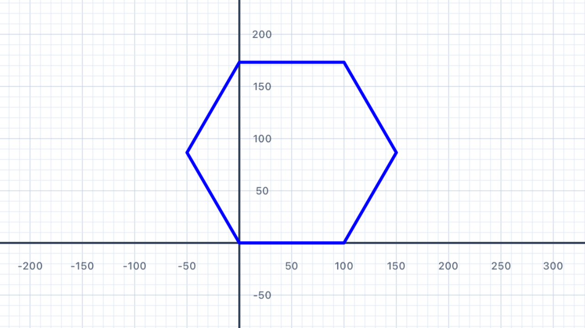
| Concept | Connection |
|---|---|
| Regular polygon formulas | Interior angle = (n − 2) × 180° ÷ n; exterior angle = 360° ÷ n |
| Limit concept (preview) | As n → ∞, the polygon approaches a circle — an intuitive preview of limits |
Angle Classification
Draw shapes whose interior angles represent each angle type — acute, right, obtuse, and reflex — then label them with your understanding.
Your Task
Draw at least four shapes: one with a reflex angle, one with all right angles (square), one with acute angles (equilateral triangle), and one with obtuse angles (regular hexagon). Try to draw them adjacent on the canvas.
Four angle categories. Every angle (measured between 0° and 360°) falls into exactly one of these categories:You'll write code to classify these programmatically in Chapter IV's "Classify an Angle" exercise. For now, just draw shapes that contain each type and recognise them visually.
- Acute: less than 90° (e.g. 30°, 60°, 89°)
- Right: exactly 90°
- Obtuse: more than 90° but less than 180° (e.g. 100°, 135°, 170°)
- Straight: exactly 180° (a straight line — the "angle" is zero bending)
- Reflex: more than 180° but less than 360° (e.g. 200°, 270°, 355°)
Regular polygon interior angles. Using the formula(n − 2) × 180° ÷ n:As n grows, the interior angles grow toward (but never reach) 180°. Only the triangle has acute interior angles; only the square has right angles; all regular polygons with 5 or more sides have obtuse angles.
- Triangle (n = 3): 60° — acute
- Square (n = 4): 90° — right
- Pentagon (n = 5): 108° — obtuse
- Hexagon (n = 6): 120° — obtuse
- Octagon (n = 8): 135° — obtuse
- Decagon (n = 10): 144° — obtuse
Preview of Chapter IV. This is the end of Chapter II — you've now worked with variables, multiple pens, colour, fill, and composite shapes. Next up in Chapter III: loops will let you replace repetitive code with one concise statement, so drawing a 20-sided polygon doesn't require copying 40 lines of code. And Chapter IV will teach you how to write code that makes decisions — automatically classifying angles like the ones above, or picking different actions based on inputs. Each new chapter adds one more tool to your toolkit.
💡 Think About It
- What is the interior angle of a regular pentagon? Is it acute, right, or obtuse?
- Can a triangle have an obtuse angle? Can it have two?
- What is the minimum number of sides a polygon needs to have a reflex angle?
| Concept | Connection |
|---|---|
| Angle classification | Acute <90°; right = 90°; obtuse 90°–180°; straight = 180°; reflex >180° |
| Interior angle formula | (n − 2) × 180° ÷ n — determines whether a regular polygon has acute or obtuse angles |